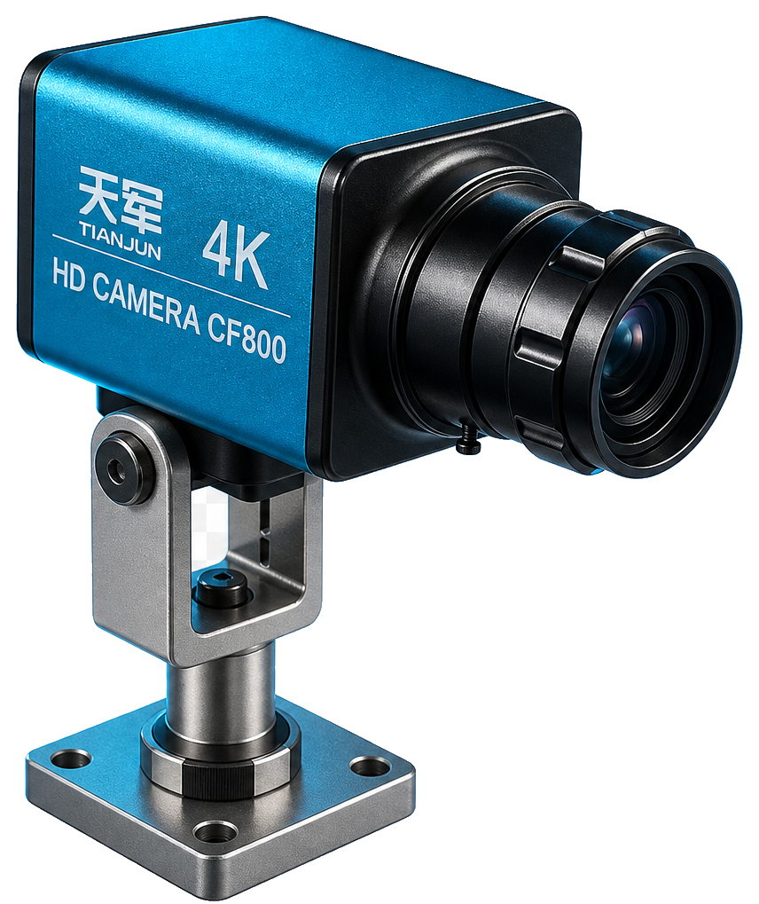
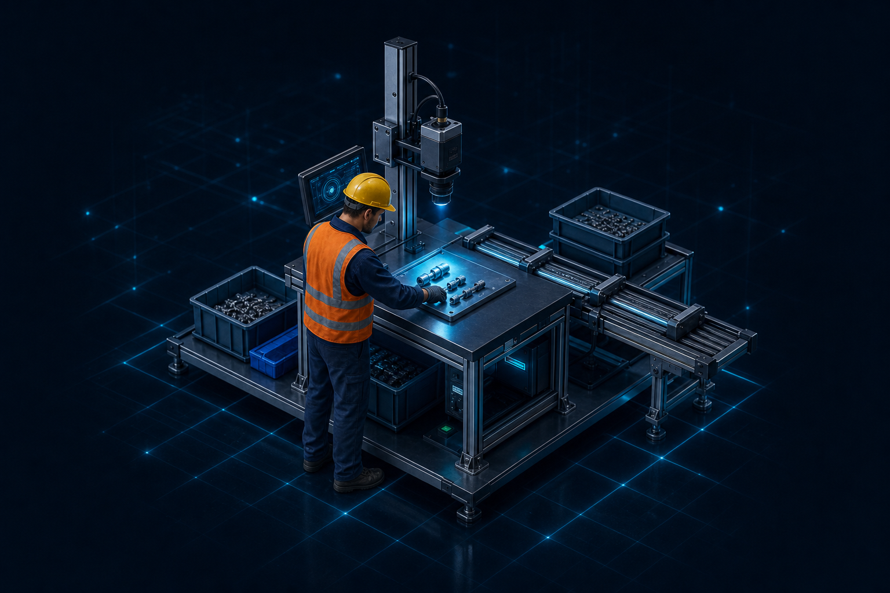

项目
工位01 号
班次白班
平均节拍2.0s 当前节拍 1.53s
今日生产统计更多 ›
9件
检测总数
8件
OK数量
1件
NG数量
88.9%
合格率
装电池 94%
示意画面 · 待接入现场摄像头
正在连接检测服务
等待后端画面数据…
00:00
00:00
AI检测中
3/6
装电池
动作识别结果
取电池99%
对准卡槽97%
装入电池94%
压合确认--
线束检查--
外观复核--
清点识别结果
螺丝 M45/8
卡扣4/4
垫片3/6
弹簧2/4
端子0/2
投料识别结果
等待秤读数…--
逐件覆盖结果
螺丝 #1已覆盖
螺丝 #2已覆盖
螺丝 #3已覆盖
螺丝 #4已覆盖
螺丝 #5拧紧中
#6 / #7 / #8待覆盖
SOP步骤时间轴
开始
1
取机壳
0.9s · 15:18:45
2
取电池
0.6s · 15:18:46
3
装入电池
运行中 0.5s
4
压合确认
等待中
5
线束检查
等待中
6
外观复核
等待中
✓ 结束
物品清点
容器清点
跟踪中…
已结算 12（OK:11 NG:1）
螺丝 M4
5 / 8
A1 ~ A5
卡扣
4 / 4
B1 ~ B4
垫片
3 / 6
C1 ~ C3
弹簧
2 / 4
D1 ~ D2
端子
0 / 2
等待出现…
周转箱 #B07 OK
螺丝 8/8卡扣 4/4
周转箱 #B08 未满
螺丝 6/8卡扣 3/4
周转箱 #B09 未满
螺丝 2/8卡扣 0/4
周转箱 #B06 OK
螺丝 8/8卡扣 4/4
逐件覆盖
周期中 · 已覆盖 5 / 8
00:12
收尾标签：贴标 待检出
拧紧 进行中
5 / 8 已拧
点胶 完成
8 / 8 已点
个体状态 · 螺丝 8 颗（拧紧）
1234
5678
⚠ 检出漏打，已挂起待补：
称重投料
待机
工件 —
配方 —
0.0g
实时毛重 · 净重 0.0
等待配方
选择型号后显示物料序列
—
运行指标雷达
节拍分析
设备状态

设备编号251011
运行状态运行中
连接状态正常
温度
运行时长02:21:45
工位3D预览

良品/不良品统计
NG步骤TOP3NG物品 TOP3逐件实时反馈投料实时反馈更多 ›
1装入电池11.1% (1)
2压合确认11.1% (1)
3线束检查11.1% (1)
1垫片 漏装缺 3 片
2弹簧 漏装缺 2 件
3端子 漏装缺 2 件
待机中
当前物料—
目标 / 实际— / —
已完成物料— / —
还差 3 颗未拧紧
已覆盖5 / 8
用时 · 当前第几颗12s · 第 5 颗
未覆盖物件
#6#7#8
合格率趋势近1h
实时预警更多 ›
16:18:40电池未完全入位NG
16:17:56压合动作过快警告
16:16:22装电池节拍正常信息
16:15:08电池对准耗时偏长警告
16:14:31工件 #251010 检测合格信息
16:13:47线束检查步骤漏检NG
16:12:55工件 #251009 检测合格信息
16:11:20安装卡扣节拍超阈值警告
16:10:38工件 #251008 检测合格信息
16:09:12产线运行正常信息
16:08:05工件 #251007 检测合格信息
▣
项目管理
管理机器视觉检测项目、配置识别逻辑与事件。
#/project
核心工作区
状态概览
快捷操作
最近动态
系统约束
项目管理
管理机器视觉检测项目、配置识别逻辑与事件。
OPPO 电池装配线
金龙双工位复检
周转箱码垛清点
螺丝逐件覆盖
任务类型与逻辑模式
任务类型
跟踪模式下自动适配。
计数器定义
OPPO 电池装配线（配置）
基础设置
步骤设置
逻辑设置
事件设置
基本信息
模型配置
未配置
未绑定模型
附加模型 (多模型 ROI)
在主模型基础上叠加最多 4 个独立模型，每个可指定 ROI 区域、检测频率、独立颜色。提示：多模型同跑会增加 GPU 显存压力，4-5GB 显存建议最多 2 个（主+1 副）。
班次拆分
启用跨班次自动拆分会话
步骤设置
Monitor 不绘制步骤 ROI 外的框
| 原始标签 | 启用 | 置信度阈值 | 显示名称 | 隐藏标注框 | 检测框颜色 | Box尺寸上限 | 步骤ROI | 最短持续(秒) | 最大持续(秒) | 超时NG | 消失等待时间(秒) | 最少帧数 | 检测类型 | 静态触发帧 | 参与周期 | 替补目标 | 默认PT | 严格顺序 | 单次接受 |
|---|---|---|---|---|---|---|---|---|---|---|---|---|---|---|---|---|---|---|---|
| battery | W≤ H≤ | ||||||||||||||||||
| press | W≤ H≤ |
结算方式与超时
顺序模式 - 步骤排序
检测模式 - 需检测的步骤
自定义模式 - 条件配置
周期性强制动作
跟踪模式 - 物品清点配置
逐件覆盖 — 通用参数
逐件覆盖 — 每个步骤的角色
NG 周期保护
防重复结算
同时出现组
称重投料 — 配置 (v3.31)
区域事件 — 动作规则 (v3.32)
误判过滤（高级）
事件定义
模型仓库
上传、管理和查看视觉模型与推理引擎文件。模型仓库为全局资源，跨项目共享，不随当前项目切换。
模型资产工作区
当前模型加载中…
推理格式—
标签数量—
转换状态—
状态概览
4
模型文件
2
使用中
2
TRT 引擎
38
类别标签
快捷操作
上传新模型›
刷新模型列表›
删除闲置模型›
最近动态
加载中…
系统约束
删除模型前确认未被项目引用
大模型加载会占用 GPU 显存
标签变更需同步项目步骤
模型列表共 4 个模型 · 2 个使用中
◈
使用中bestGW2
版本: V1.1大小: 18.4 MB框架: PyTorch类别: 12 个上传: 2026-05-30
◈
使用中bestGW1
版本: V1.0大小: 16.2 MB框架: ONNX类别: 10 个上传: 2026-05-28
◈
闲置bestGW2 (TRT)
版本: V1.1大小: 36.1 MB框架: TensorRT类别: 12 个上传: 2026-05-30
◈
闲置screw-v8
版本: V0.8大小: 22.7 MB框架: PyTorch类别: 6 个上传: 2026-05-22
输入源设置
配置 USB、海康 SDK、RTSP、视频文件与图片输入源。
选择摄像头
已检测: —
USB / 海康工业相机本地直连，免网络
NVR / IP Camera（稳定）海康 SDK 直连
NVR / IP Camera网络摄像头 RTSP 拉流
▷拖拽视频文件到此处或 点击上传
支持 MP4 / AVI / MOV 格式
本地视频文件回放与离线测试
▦拖拽图片文件到此处或 点击上传
支持 JPG / PNG / BMP 格式
本地图片文件单图测试
当前配置摘要
输入源类型摄像头
设备USB Camera · device 0
分辨率1280 x 720
帧率10 FPS
使用说明
1选择输入源类型（摄像头 / 海康 / RTSP / 视频 / 图片）
2配置相关参数或上传文件
3点击"保存并启动检测"开始使用
4系统将自动跳转到检测中心页面
输入源接入指引
摄像头 USB / 工业本地直连免网络，适合产线工位常驻取流，工业相机走海康 MvCamera SDK。
海康 SDKNVR / 网络球机稳定接入，支持主子码流切换与多通道。
RTSP 拉流通用网络视频流，跨品牌 IP Camera 接入，需保证网络稳定。
视频 / 图片本地文件回放与单图测试，用于离线验证模型与调参。
提示：摄像头 / 海康 / RTSP 在主程序原生输入源页配置启动；视频与图片可在本页上传后直接"保存并启动检测"。
数据中心
0
实时检测
0
合格
0
不良
—
良率
总周期数
0
本日累计
平均周期时间
0.00s
仅正常轮次
良率
—
达标线 95%
合格 / 不良
0 / 0
OK / NG
查询条件
会话: —
会话列表
加载中…
会话详情
步骤耗时统计（仅正常轮次）
| 步骤名称 | 次数 | 耗时 (秒) | 到下步间隔 (秒) |
|---|---|---|---|
| 暂无步骤记录 | |||
周期详情
| # | 工件码 | 开始时间 | 耗时 | 结果 | 事件 | 操作 |
|---|---|---|---|---|---|---|
| 暂无周期记录 | ||||||
记录设置
数据导出
存储与清理
称重台账
记录项
视频录制
视频质量
● 记录引擎运行中 · READY
工单列表
| # | 工单号 | 项目 | 绑定方式 | 计划/完成 | 状态 | 操作 |
|---|---|---|---|---|---|---|
加载中 | ||||||
工件列表
| # | 工件条码 | 所属工单 | 项目 | 结果 | 检测时间 | 操作 |
|---|---|---|---|---|---|---|
加载中 | ||||||
缺陷记录
| 时间 | 工件条码 | 缺陷代码 | 描述 | 操作 |
|---|---|---|---|---|
加载中 | ||||
缺陷 Pareto
暂无缺陷统计缺陷记录积累后自动生成帕累托分布
扫码器为设备级配置，按工位绑定，多项目共享，不随当前项目切换。
扫码器设备
| 名称 | IP 地址 | 解析模式 | 状态 | 操作 |
|---|---|---|---|---|
加载中 | ||||
暂无扫码记录扫码枪触发后实时显示
MES 网关连接为全局配置，所有项目共用，不随当前项目切换。
| 连接名称 | 适配器 | 状态 | 推送事件 | 绑定工位 | 重试 | 最后同步 | 操作 |
|---|---|---|---|---|---|---|---|
加载中 | |||||||
外部设备为设备级配置，按工位绑定，不随当前项目切换。
设备列表
| 名称 | 类型 | 协议 | 地址 | 状态 | 操作 |
|---|---|---|---|---|---|
加载中 | |||||
暂无外设数据称重等串口数据上报后实时显示
集群主从配置为整机级全局设置，不随当前项目切换。
已连接副机
单机模式 · 暂无副机切换为主机模式后副机心跳会出现在这里
暂无箱体汇总副机上报后按箱号聚齐显示
外部生产管控系统通过 REST 主动下发开工 / 完工 / 报警，本机按规格自动切项目、上屏四要素、维护在途报警台账（v3.26+，只读监视，接收配置在主程序或 API 修改）。
加载中
当前生产任务（四要素）
暂无在途任务外部系统下发开工后显示
暂无在途报警外部系统报警下发后进入台账，处理后闭环消除
包装箱结算流：扫码开箱 → 逐件装箱视觉确认 → 满箱结算推 MES（v3.21+）。支持人工强制结算 / 滑轨补做 / NG 补做重检。
加载中
未选择结算流点击上方配置行查看当前箱运行状态
报警设置
设备连接未连接
协议设置
如果不确定，请逐个尝试不同协议
功能测试
测试模式
开启后，下方测试按钮才能使用
红灯亮
绿灯亮
蓝灯亮
黄灯亮
红灯灭
绿灯灭
蓝灯灭
黄灯灭
语音播报
OK 播报"合格"，NG 播报"不合格"。若显示设置中"NG 弹窗显示原因"已开启，NG 原因也会一并播报。
共享报警灯（一个物理灯多工位共用）
NG
警告
OK
待机
推荐：NG=1（最高）→ 警告=2 → OK=3 → 待机=4。NG 触发期间不会被 OK 抢占。
事件1合格
事件2NG
触发条件
当前项目：— —
工作指示灯 检测运行时常亮
常亮颜色开始检测后此灯常亮，事件触发闪灯后自动恢复
事件1 合格
时长秒
事件2 NG
时长秒
事件3 警告
时长秒
模拟触发
基本信息设置
以上字段持久化到后端系统配置，自定义导出与 MES 推送同源使用。本页其余显隐开关由主程序「系统设置 → 显示设置」本地持久化管理。
顶部导航栏显示
项目选择板块
当前模式
运行状态
运行时间
实时时间
检测中心显示
SOP 流程条
右侧统计数据面板
不良统计图表
产能完成图表
步骤统计表格
步骤统计表格列（默认全开）
序号
步骤
状态
PT/s
结果
FPS
延迟
检测数
CT 包含 NG 周期
PT / CT 口径
结算保留 / NG TOP3
结算后强制保留显示
NG 步骤 TOP3
窗口模式仅打包桌面版生效
主窗口全屏
关 = 1600×900 窗口；开 = 占满显示器
启动动画仅打包桌面版生效
启用启动动画
开 = 粒子球 + 手势识别
闲置自动跳过
默认计数器显示系统内置
检测次数（总产量）
OK 次数（合格总数）
NG 次数（不良总数）
NG 步骤
NG 步骤：统计每个步骤的不良次数，用于定位高频缺陷工序。
画面变换每通道独立
左右镜像
上下镜像
检测框外观
正常检测框颜色
NG 检测框颜色
显示置信度
NG 提示显示原因
语音播报
效果预览
● 检测框 / 提示框 实时预览 LIVE
系统预设提示框
正在读取激活项目的提示框配置…
自定义提示框
暂无自定义提示框
视频流设置
启用帧率限制
降低目标帧率可减少 CPU/GPU 占用，但会增加画面延迟。
推理加速
FP16 半精度推理
FP16 可显著提升 GPU 推理速度，精度损失通常可忽略；CPU 推理无效。
MediaPipe 骨架叠加
视觉增强
启用 MediaPipe 叠加
姿态骨架
手部关键点
骨架样式
自定义骨架样式 开启后骨架用纯色绘制，关闭 = MediaPipe 默认多彩配色
高级选项
工业专用手部模型 未启用
推理设备 (GPU/CPU)
CUDA 状态检测中…
读取当前推理设备中…
检测框滤波（卡尔曼滤波）
启用卡尔曼滤波
面板轮询与日志条数
v3.29+
各管理面板的自动刷新间隔（毫秒）与「最近日志」显示条数，改小更实时、改大更省资源。
加载中
日志显示条数
加载中
更换或激活插件后需重启软件方可生效（停用当前展示插件后界面将切回主程序原生 UI）。
插件管理
| 插件名称 | 客户码 | 版本 | 签名 | 状态 | 操作 |
|---|---|---|---|---|---|
加载中 | |||||
—
账号鉴权状态
当前状态：加载中…
匿名兜底（未登录仅可控制检测）
重启后保持登录
账号列表
| 用户名 | 角色 | 状态 | 操作 |
|---|---|---|---|
加载中 | |||
角色列表
| 角色代码 | 角色名称 | 权限数 | 操作 |
|---|---|---|---|
加载中 | |||
M2M API Key 管理
| 名称 | Scope | 状态 | 操作 |
|---|---|---|---|
加载中 | |||
串行流水线配置
| 名称 | 工位顺序 | 触发模式 | 超时(秒) | 启用 | 操作 |
|---|---|---|---|---|---|
加载中 | |||||
串行流水线：同一工件依次走 N 个工位，全过才合格。3 种触发：时间窗 FIFO / 扫码绑定 / 物理 GPIO。与工位组（并行）同工位互斥。